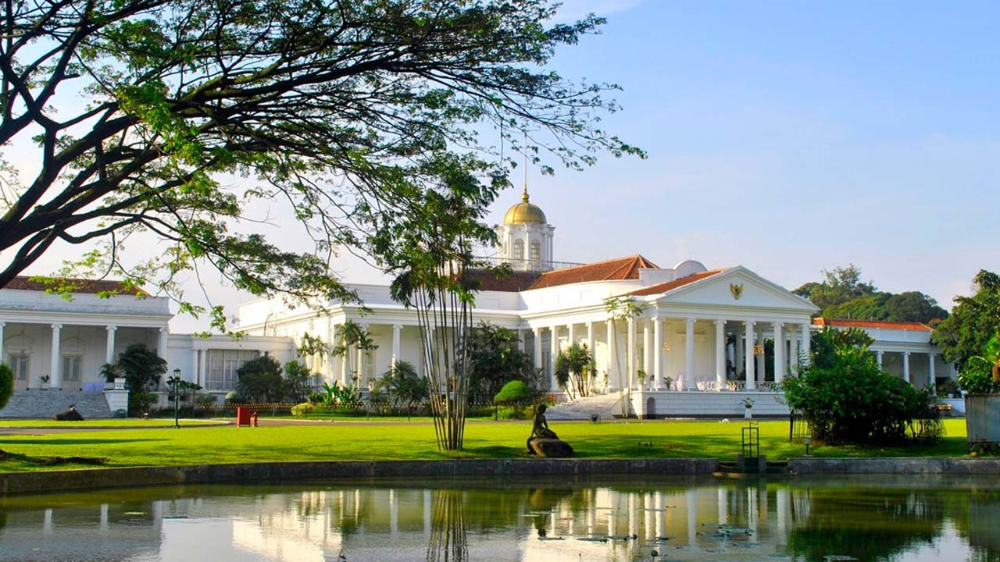
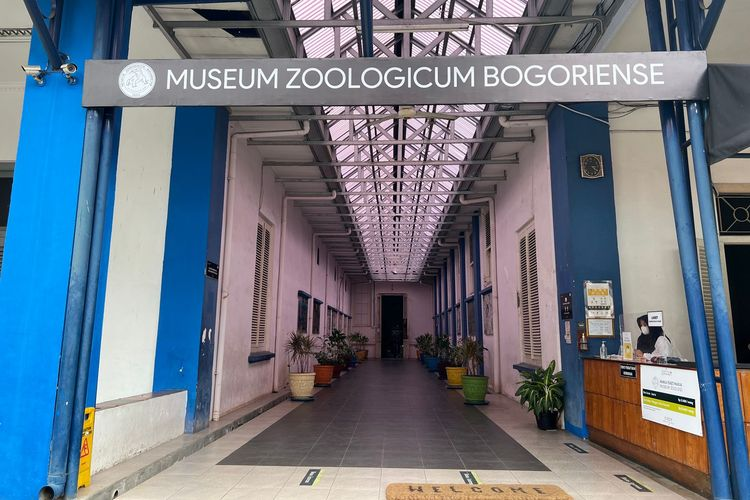

Sejarah

Kota Bogor adalah sebuah kota yang terletak di Provinsi Jawa Barat, Indonesia. Kota ini terletak 59 km di sebelah selatan Jakarta, dan merupakan enklave Kabupaten Bogor. Pada tahun 2024, jumlah penduduk Kota Bogor sebanyak 1.137,859 jiwa, dengan kepadatan 10.208 jiwa/km2. Pada masa Kolonial Hindia Belanda, Kota Bogor dikenal dengan nama Buitenzorg yang berarti tanpa kecemasan atau aman tentram. Kota Bogor dikenal dengan julukan Kota Hujan, karena memiliki curah hujan yang lumayan sangat tinggi. Kota Bogor terdiri atas 6 kecamatan yang dibagi lagi atas sejumlah 68 kelurahan.
SumberGeografis

Kota Bogor mempunyai ketinggian rata-rata minimal 190 meter, maksimal 350 meter dengan jarak dari ibukota kurang lebih 60 km. Kedudukan geografis Kota Bogor di tengah-tengah wilayah Kabupaten Bogor serta lokasinya sangat dekat dengan Ibukota Negara. Bogor memiliki iklim tropis dengan tipe Hutan Hujan Tropis. Kondisi iklim di Kota Bogor suhu rata-rata tiap bulan 26°C dengan suhu terendah 21,8°C dan suhu tertinggi 30,4°C. Kelembaban udara ≥70%, curah hujan rata-rata setiap tahun di Kota Bogor sangatlah tinggi, yaitu sekitar 3.500−4000 mm dengan curah hujan terbesar pada bulan Januari, karenanya Kota Bogor dijuluki sebagai "Kota Hujan".
SumberPariwisata
Kota Bogor menawarkan beragam destinasi wisata menarik. Keindahan alamnya yang sejuk, kekayaan budaya, dan berbagai tempat menarik yang cocok untuk dikunjungi. Suasana kota yang asri, lengkap dengan pemandangan hijau yang luas dan berbagai pilihan kegiatan rekreasi menjadikannya tempat yang ideal untuk mencari ketenangan maupun petualangan. Berikut ini adalah beberapa destinasi yang cocok untuk dikunjungi.
Kebun Raya Bogor

Kebun Raya Bogor atau Kebun Botani Bogor adalah sebuah kebun botani besar yang terletak di Kota Bogor, Indonesia. Kebun ini dioperasikan oleh Badan Riset dan Inovasi Nasional (BRIN). Kebun ini terletak di pusat kota Bogor dan bersebelahan dengan kompleks istana kepresidenan Istana Bogor. Luasnya mencapai 87 hektar dan memiliki 15.000 jenis koleksi pohon dan tumbuhan. Letak geografis Bogor yang mengalami hujan hampir setiap hari bahkan di musim kemarau menjadikan kebun ini sebagai lokasi yang menguntungkan untuk budidaya tanaman tropis. Kebun Raya Bogor didirikan pada tahun 1817 oleh pemerintah Hindia Belanda, Kebun Raya Bogor berkembang pesat di bawah kepemimpinan berbagai ahli botani terkenal termasuk Johannes Elias Teijsmann, Rudolph Herman Christiaan Carel Scheffer, dan Melchior Treub. Sejak didirikan, Kebun Raya Bogor berfungsi sebagai pusat penelitian utama pertanian dan hortikultura, dan merupakan kebun raya tertua di Asia Tenggara. Saat ini Kebun Raya Bogor ramai dikunjungi sebagai tempat wisata, terutama hari Sabtu dan Minggu serta hari libur. Tiket masuknya Rp 30.000. Di sekitar Kebun Raya Bogor tersebar pusat-pusat keilmuan yaitu Herbarium Bogoriense, Museum Zoologi Bogor, dan PUSTAKA.
SumberIstana Bogor
Istana Bogor merupakan salah satu dari enam Istana Presiden Republik Indonesia yang mempunyai keunikan tersendiri dikarenakan aspek historis, kebudayaan, dan faunanya. Salah satunya adalah keberadaan rusa-rusa yang didatangkan langsung dari Nepal dan tetap terjaga dari dulu sampai sekarang. Seperti namanya, istana ini terletak di Bogor, Jawa Barat. Saat ini sudah menjadi tren budaya warga Bogor dan sekitarnya setiap hari Sabtu, Minggu, dan hari libur lainnya berjalan-jalan di seputaran Istana Bogor sambil memberi makan rusa-rusa indah yang hidup di halaman Istana Bogor dengan wortel yang diperoleh dari petani-petani tradisional warga Bogor yang selalu siap sedia menjajakan wortel-wortel tersebut setiap hari libur.
SumberMuseum Zoologi Bogor
Museum Zoologi Bogor adalah museum yang terletak di Bogor, memiliki koleksi yang berkaitan dengan dunia satwa seperti berbagai spesimen yang diawetkan maupun fosil hewan. Museum ini terbagi menjadi dua, salah satunya dibuka setiap hari untuk umum yang berisi ruang pameran terletak di Jalan Ir. H. Juanda No. 9 Bogor, museum yang satu lagi berfungsi sebagai tempat koleksi dan hanya dibuka untuk umum setahun sekali pada bulan Oktober, berada di Pusat Ilmu Pengetahuan Cibinong tepatnya di Jalan Raya Jakarta - Bogor Km.46 Cibinong, Bogor.Kedua bagian museum ini dikelola oleh Bidang Zoologi Pusat Penelitian Biologi−LIPI. Koleksi ilmiah yang dimiliki museum ini meliputi kategori antara lain: mamalia, ikan, burung, reptil dan amfibi, moluska, serangga, dan invertebrata lain yang bukan moluska dan serangga.
Sumber